Рамки машин: язык состояний, легенда и анимация
- 1Сейчас статус читается одним признаком. «Едет» — белые уголки, «стоит» — светло-серые: на светлом кадре почти не отличить. «Работает на месте» вообще нет: в данных он есть, а рамка рисует его как «едет». «Ждёт ответа» на рамке не показан. Выбранную машину на кадре не видно.
- 2У профи статус = цвет + форма линии + значок + слово. Выбор — отдельный слой. Легенда собрана из тех же данных, что и рамка. Анимация передаёт смысл: появление, ожидание ответа, след движения.
- 3Совет: вариант A как основа + две вещи из B и C. Из C берём легенду-фильтр со счётчиками, из B — след и кольцо на земле у выбранной машины. К показу 26.10 хватит малой правки: 5 цветов по статусам, «работает» отдельно, «ждёт ответа» прямо на рамке, легенда под видео.
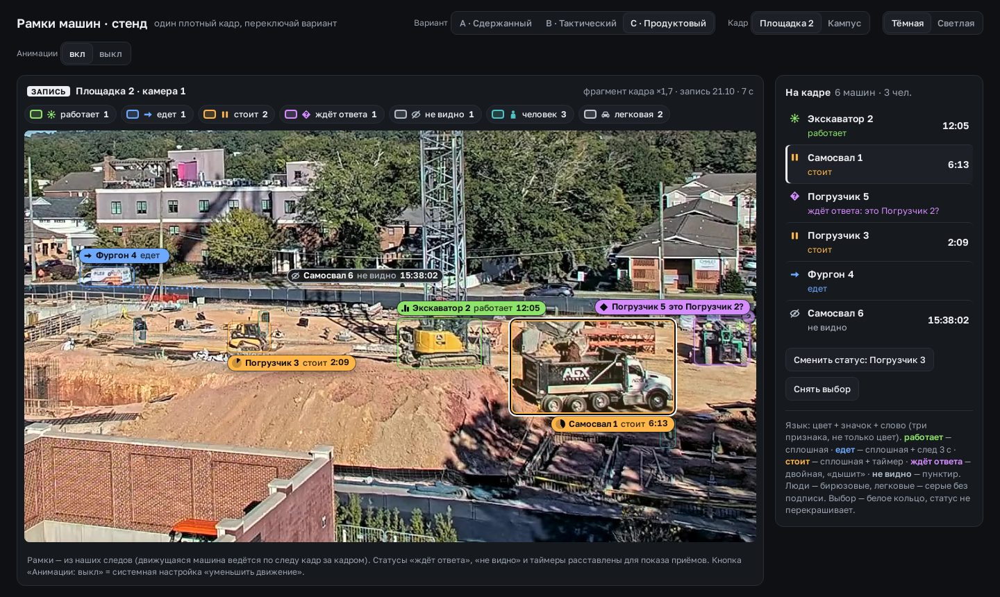
Состояния рамки в пульте сейчас
Источник — код ветки stage/ugly-tipy-2510 (ui/js/camview.js, camview-model.js, camview-labels.js, camview-track.js, tokens.css) и снимки пульта 25.10. Код не менял.
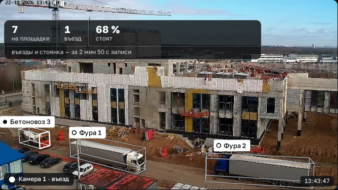
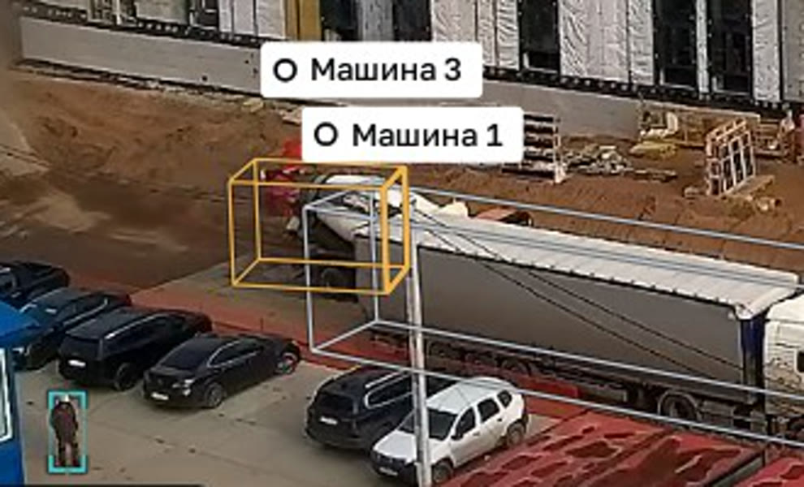
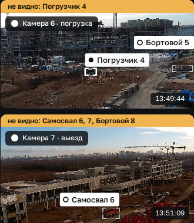
| Состояние | Цвет | Линия / форма | Подпись | Анимация | Что не так |
|---|---|---|---|---|---|
| Едет (move) | белый --on-scrim #FFF | уголки 2,75 px + тонкая рамка 1 px 50 %; знак ● | вид a: «● Фура 1» · вид b: «Фура 1 · едет» | появление 0,25 с, угасание 1,5 с | белый не значит «едет»: так в видеоаналитике рисуют просто найденный объект |
| Работает на месте (work) | как «едет» | как «едет» | «едет» | — | в данных есть (states.py, отчёты считают отдельно), а рамка сливает его с «едет» (camview-model.js:46). По КП нужны «работает / простаивает / перемещается» |
| Стоит (idle) | светло-серый #C3C9D1 | уголки 1,75 px; знак ○ | вид b: «стоит 55 с»; вид a (по умолчанию) — без времени | — | от «едет» отличается толщиной и знаком 4 px; на светлом кадре серый и белый сливаются. Простой — главная цифра КП, а он самый незаметный |
| Стоит, «замороженная» | как «стоит» | рамка заперта по месту и размеру (camview-still.js) | как «стоит» | — | снаружи не видно, и это правильно: замок — техника, а не статус |
| Не видно (unseen) | янтарь #F0B451 | пунктир 6/4 полной рамкой | «Самосвал 6 · последний кадр 13:50:02», в пунктирной плашке; полоса над окном | — | янтарь занят «сомнением»; нейтральное «нет данных» выглядит как тревога |
| Ждёт подтверждения | янтарь — только в ленте и на шкале | на рамке нет (b.amber никто не ставит) | в ленте «Бортовой 8 — это Самосвал 7?» | — | вопрос не привязан к машине на видео: где она, не видно |
| Люди | бирюзовый #4FC2C4 (оставили) | уголки 1,75 px | «человек», если рамка ≥ 34 px | — | в порядке; оставляем отдельным слоем |
| Легковые | как техника | как техника | «Легковая N» | — | отдельного слоя нет. Легковые шумят наравне с техникой |
| Выбранная машина | — | на кадре не отмечена | — | — | клик в списке перематывает запись, но на видео не показывает, о какой машине речь |
Легенда сейчас: в старом виде — строка под видео «● в движении · ○ стоит · ┅ не видно». В виде v2 — только на плане: «● едет ○ стоит ● человек». Над видео v2 легенды нет, «не видно» в ней нет. Слова расходятся: «в движении» и «едет».
Как это решают в видеоаналитике, автопилотах, спорте и разметке
Ниже настоящие кадры интерфейсов из документации и с сайтов продуктов, у каждого — источник. Права у авторов: берём приёмы, картинки в продукт не идут. Круг 3 (NVIDIA, Supervision, Mobileye, Waymo, кино) уже собран — галерея refs3; здесь только новое и самое нужное оттуда.

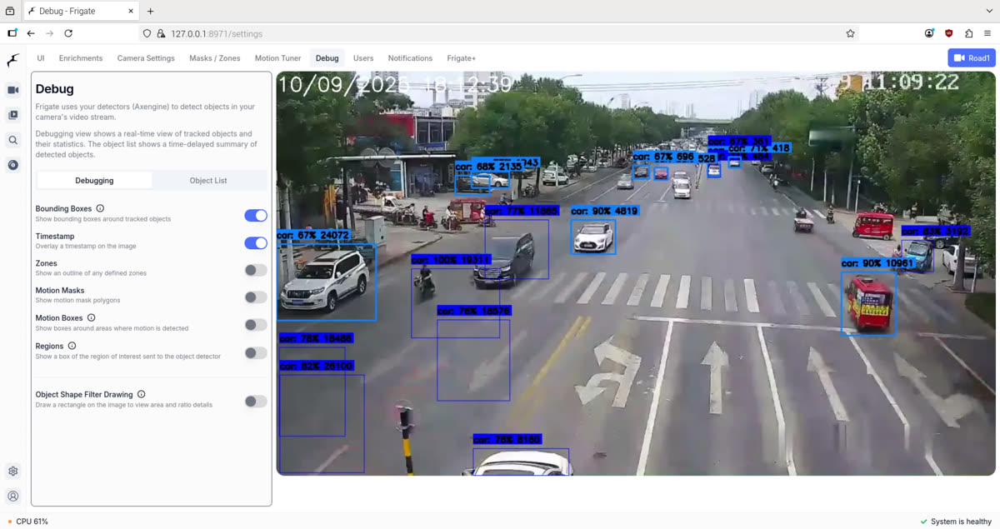


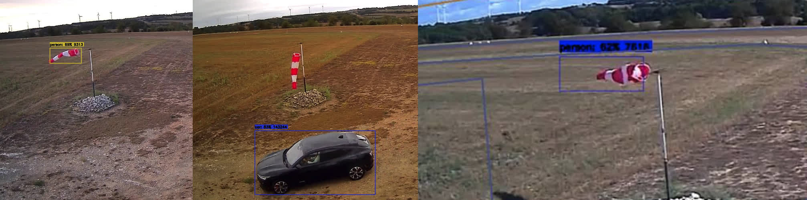

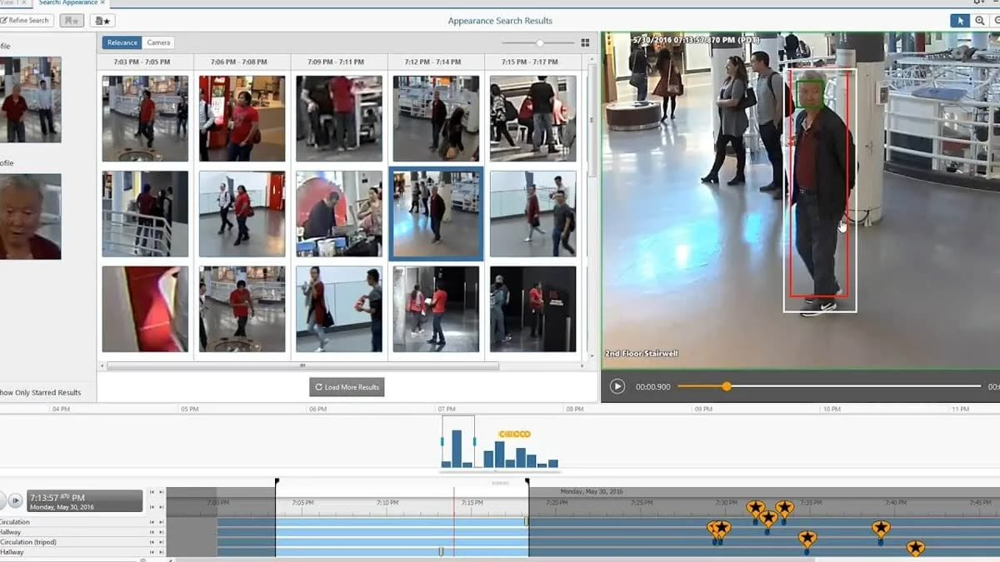


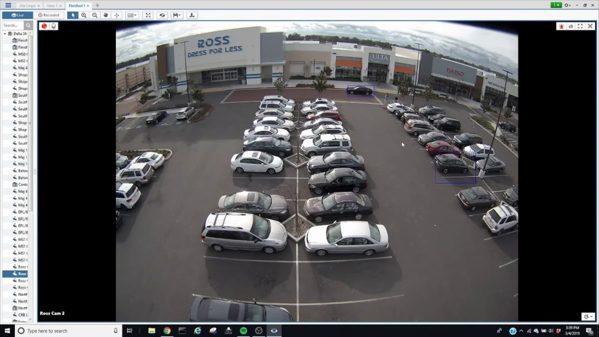


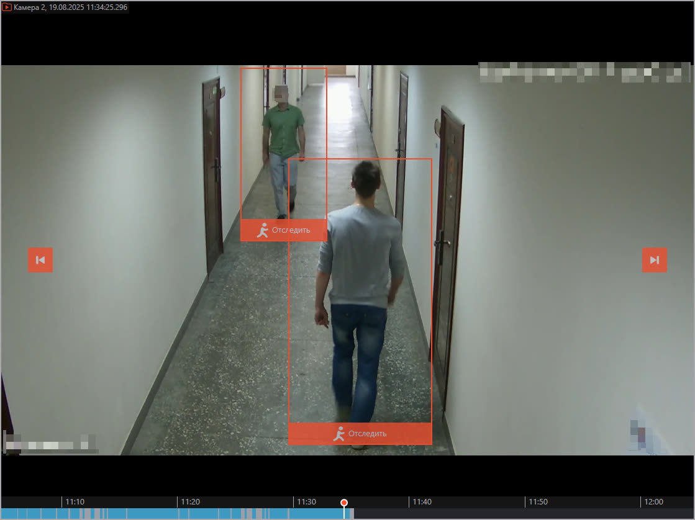


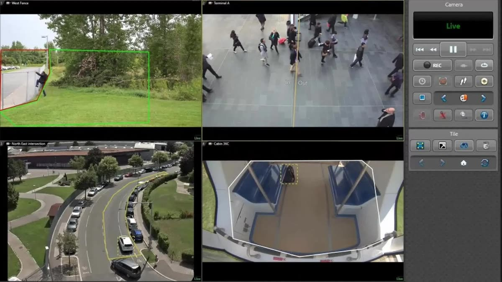


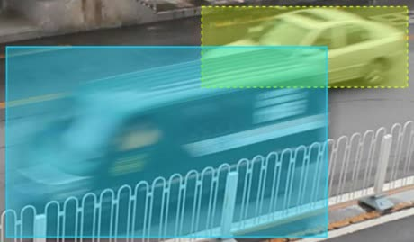


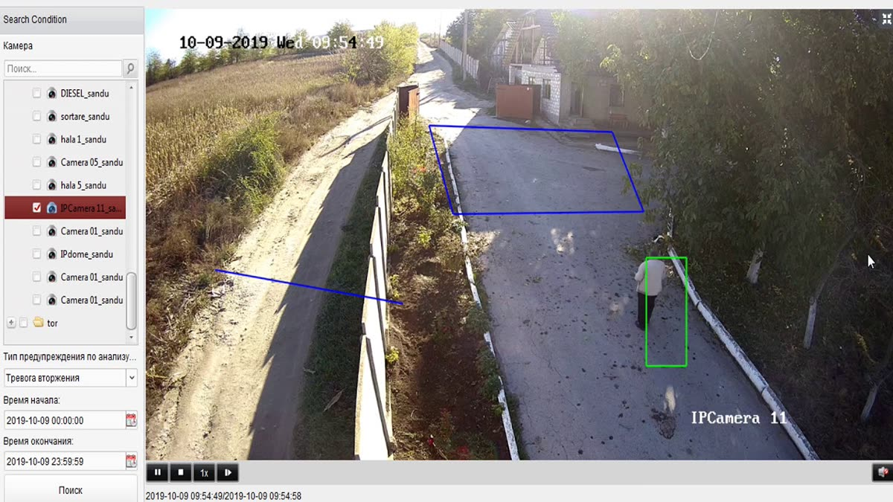


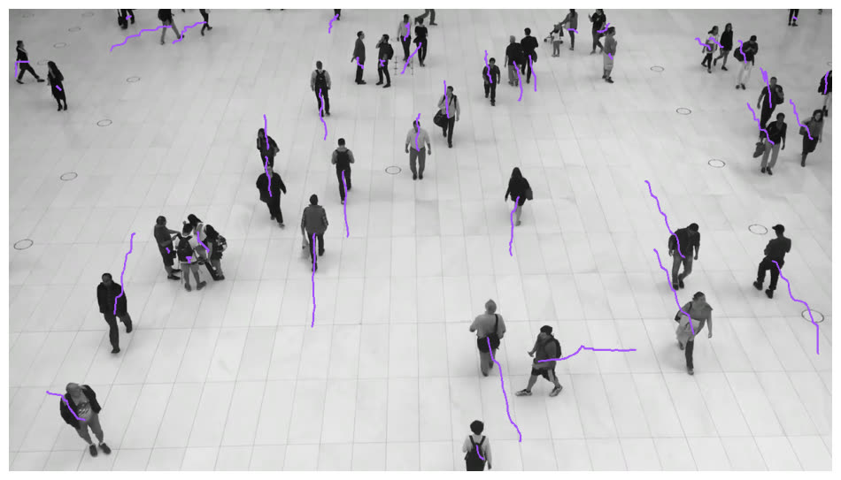

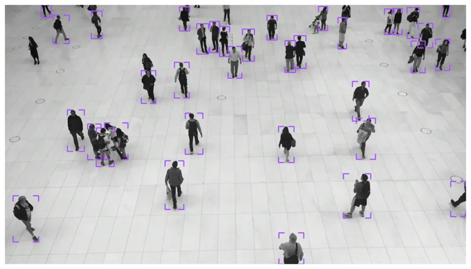

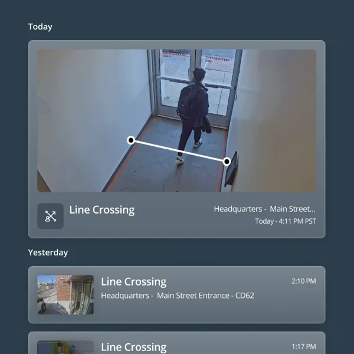
Ещё 14 кадров (Frigate, CVAT, Avigilon, Hikvision, Verkada, Supervision) с источниками лежат в рабочей папке (ux-2510/ramki/refs/list.md). Все 23 выложены рядом: refs/p01…p23. Чего не нашли: постоянной легенды цветов внутри интерфейса нет ни у Frigate, ни у Macroscop, ни у Avigilon — значения цветов описаны только в документации. Анимация рамок нигде не описана. Настоящих экранов Hawk-Eye, Tesla, Waymo, EarthCam, Dozer.ai, Buildots и Komatsu с рамками по статусам в открытом доступе нет. Значит, легенда на кадре и смысловая анимация у нас будут своими. Это преимущество, но проверить их можно только на людях.
Факты из документации
Язык состояний: что несёт цвет, что линия, что подпись
Одно правило на всё: цвет — что делает машина, линия — насколько мы в этом уверены, значок и слово — то же самое без цвета, белое кольцо — что выбрал человек. Палитра одна для рамки, списка, журнала и отчёта. Легенда собирается из того же файла (palette.js на стенде, в пульте — tokens.css), поэтому разойтись они не могут. От логотипа палитра не зависит.
| Статус | Цвет на кадре · на светлой странице | Линия | Значок | Подпись | Анимация | Слово в КП |
|---|---|---|---|---|---|---|
| работает | #8FE36B · #2F7A12 | сплошная | шестерня | «Экскаватор 2 · работает 12:04» | нет (в C — «эквалайзер» в бирке) | работает |
| едет | #6EA8FF · #1F5FD1 | сплошная + след 3 с | стрелка | «Фургон 4 · едет» | след растёт за машиной | перемещается |
| стоит | #FFB547 · #9A5B00 | сплошная | пауза | «Самосвал 1 · стоит 6:12», таймер идёт | только цифры таймера | простаивает |
| ждёт ответа | #D68CFF · #8A3FC0 | двойная | ромб с «?» | «Погрузчик 5 · это Погрузчик 2?» | «дышит» 2,4 с — единственное постоянное движение | — |
| не видно | #B4BCC8 · #5F6874 | пунктир | перечёркнутый глаз | «Самосвал 6 · не видно 13:41:58» | нет | — |
| человек | #4FC2C4 (как сейчас) | тонкая 1–1,25 px | фигурка | без подписи (или «человек», если рамка ≥ 34 px) | нет | — |
| легковая | #C3C9D1 55 % | 1 px, приглушённая | машинка | нет — это фон | нет | — |
| выбрана | белое кольцо, отдельный слой | кольцо 2 px с зазором 3 px | — | подпись в белой рамке | остальные рамки — 60 % | — |
Легенда
- Постоянная, у края видео, в одну строку: значок · слово · сколько сейчас на кадре. Счётчик делает её полезной, а не справочной.
- Она же фильтр (вариант C): нажал «легковая» — слой скрылся. У Frigate есть выключатели слоёв, но легенды нет. Мы объединяем выключатель и легенду, поэтому учиться не нужно.
- Подробное описание — по наведению на рамку, а не отдельным окном.
- Слова — те же, что в списке и журнале: «едет», а не «в движении».
- HUD-легенда внутри видео (вариант B) закрывает кадр. На телефоне — только свёрнутой.
Анимации
- Появление 0,18–0,3 с, прозрачность или «захват» уголками. Уже есть 0,25 с — оставить.
- Смена статуса — плавный переход цвета 0,3 с плюс один «пинг» кольцом. Без повторов.
- Ждёт ответа — медленное «дыхание» второй линии 2,4 с. Это единственная бесконечная анимация: зовёт человека.
- След движения 3 с с затуханием — только у «едет» (как TraceAnnotator в Supervision).
- Простой — двигаются только цифры таймера. Мигающий простой утомляет за смену.
- Нельзя: рамка не прыгает, не меняет размер и не мигает чаще 3 раз в секунду (WCAG 2.3.1). Нельзя анимировать сразу всё.
- При системной настройке «уменьшить движение» (
prefers-reduced-motion) и по выключателю всё стоит. «Дыхание» заменяет статичная двойная линия.
Числа (сверено скриптом на наших цветах)
- Контраст. Любой светлый статус-цвет на песке стройки (
#C9A57E) даёт 1,0–1,5:1, на небе — 1,2–1,8:1. Поэтому у рамки всегда тёмная обводка 1 px#0B0C0E60 % снаружи и изнутри. Тогда контраст цвета к обводке — 8–12:1. - Подпись. 12–13 px на подложке
#0B0C0E78 % с размытием 6 px. Отступ от рамки — 4 px (в B — 14 px с выноской). Белый текст на подложке — 17:1. - Цвета различаются оттенком, а не яркостью. «Едет» и «человек» — 1,13:1 между собой. Поэтому третий признак обязателен: значок и слово.
- Линия. Статус — 1,5–2 px, человек — 1–1,25 px, легковая — 1 px. Уголок = от 6 до 18 px, но не больше 22 % стороны рамки.
- На светлой странице легенда и список берут тёмные варианты цветов: 4,8–5,9:1 к белому. На тёмной — цвета кадра.
- Окно уже 600 px (телефон, превью): подпись сворачивается до «значок + номер + таймер», полное имя — по нажатию.
Один язык — три подачи
Все три на одном плотном кадре и на одной палитре. Различаются форма рамки, подпись, легенда и количество движения. На стенде переключаются вариант, кадр, тема и анимации. Можно нажать на машину в кадре или в списке и сменить статус кнопкой.
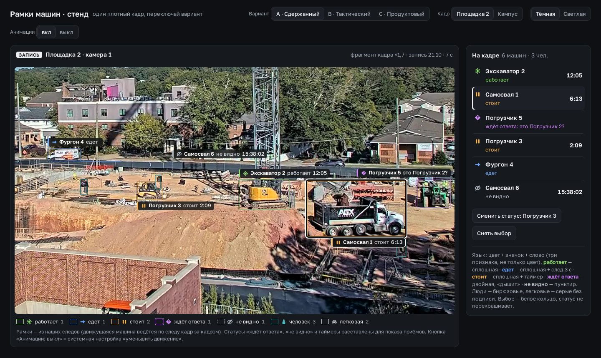
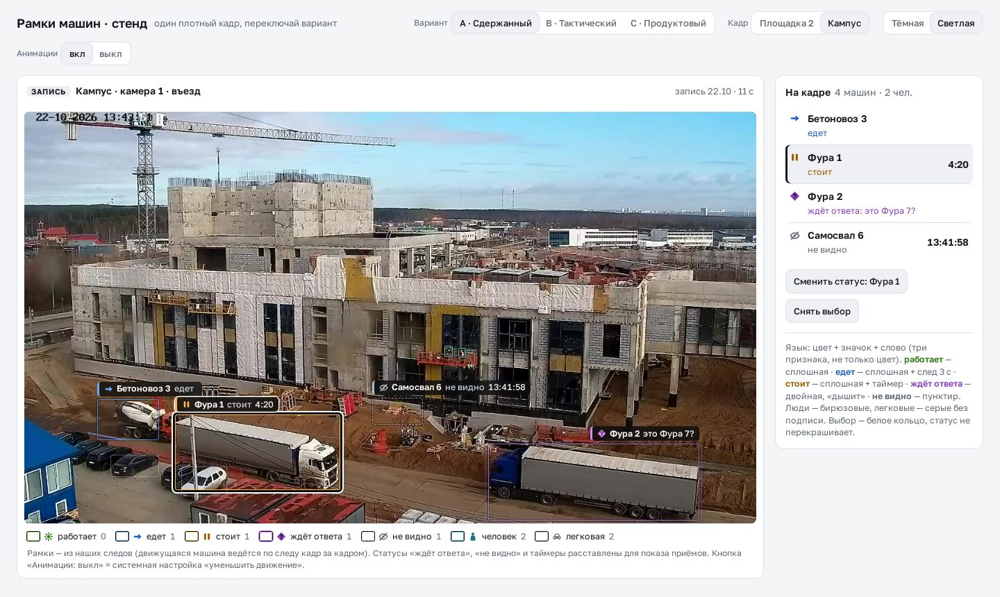
Полная тонкая рамка цвета статуса. Подпись — тёмная плашка с цветной полосой слева. Легенда — строка со счётчиками под видео. Движения почти нет.
- Спокойно на 8-часовой смене, ближе всего к нынешнему пульту
- Читается на любом кадре
- Без «вау»: на показе выглядит как обычная видеоаналитика
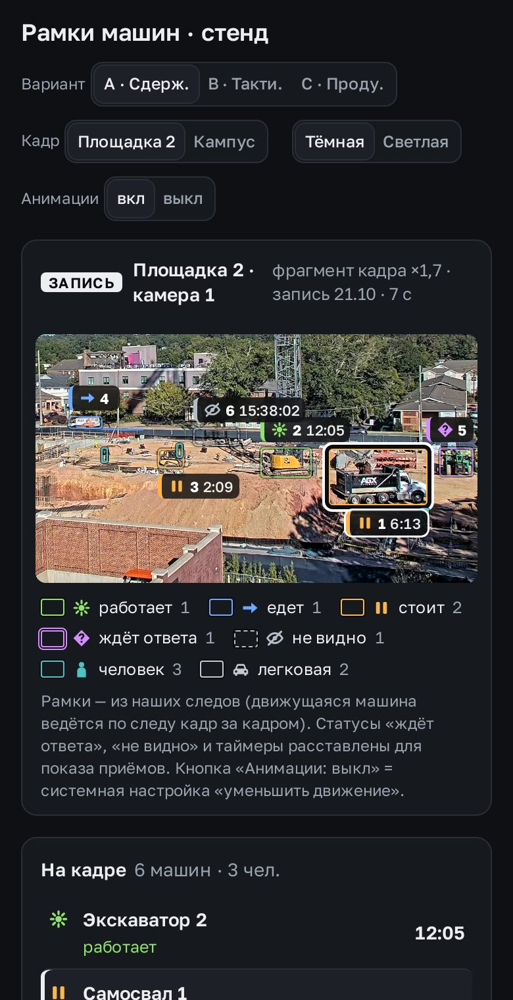
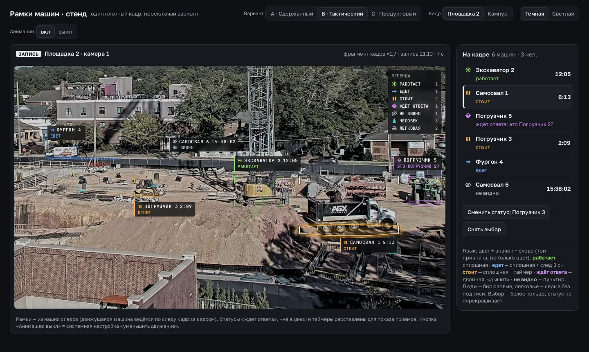
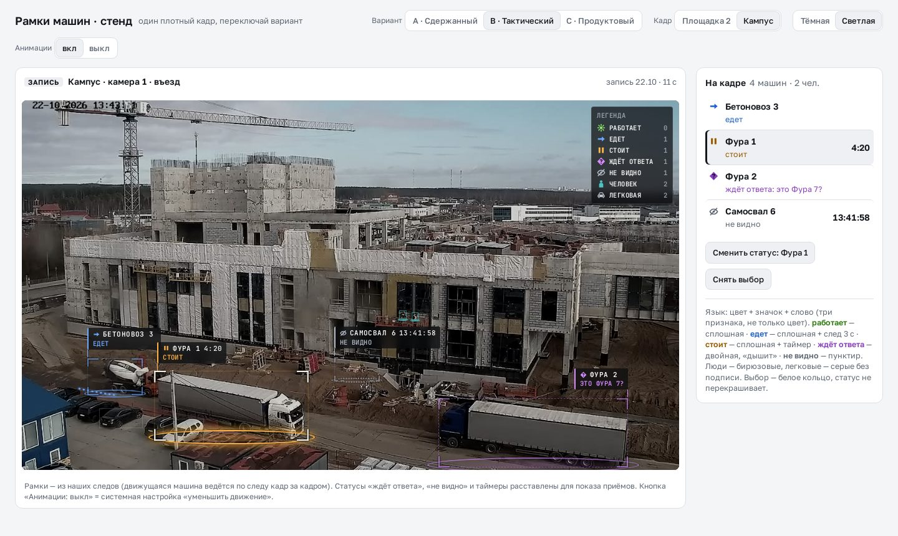
Уголки и кольцо на земле под машиной. Видео приглушено в цвете, чтобы рамки светились. Подпись моноширинным шрифтом на выноске. У работающей машины кольцо вращается, у вопроса бегут «муравьи», появление — «захват». Легенда — панель в углу видео.
- Самый «киношный», сильнее всего на показе
- Кольцо на земле показывает, где машина стоит, даже когда рамки перекрываются
- Много движения на весь день; приглушённое видео не всем по вкусу; панель закрывает угол кадра
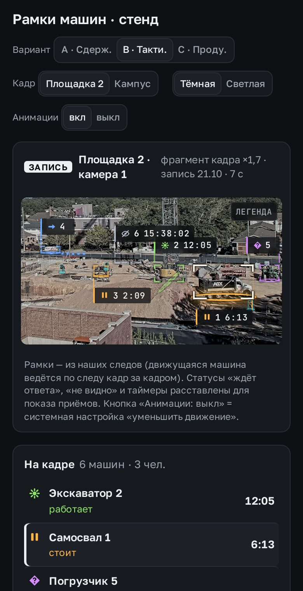
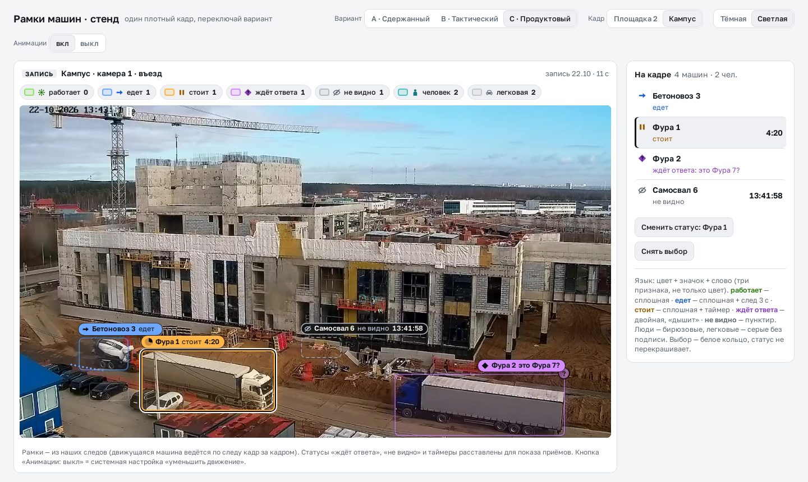
Скруглённая рамка с лёгкой заливкой и свечением. Подпись — цветная бирка: у простоя кольцо-таймер до нормы 15 мин, у работы «эквалайзер», у вопроса значок «?» в углу. Легенда — чипы со счётчиками над видео, они же фильтр.
- Понятнее всего без обучения: легенда сама фильтрует
- Простой виден издалека — по КП это главное
- Заливка закрывает мелкую технику; яркие бирки на плотном кадре спорят друг с другом
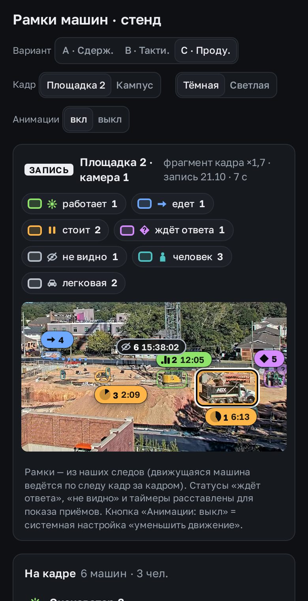
Основа — A, легенда — из C, выбранная машина — из B
Тонкие рамки A не мешают смотреть смену. Чипы со счётчиками из C делают легенду рабочей. Кольцо на земле и след из B получает только выбранная машина: это и есть «красиво» на показе, а кадр не превращается в ёлку. «Ждёт ответа» — единственное, что движется само.
К показу 26.10 — малой правкой (≈ 1–1,5 ч сборщика + приёмка глазами по ролику)
tokens.css: пять токенов--st-work/move/idle/ask/unseenвместо пары «белый / серый». Люди остаются--scrim-person.camview-model.js:46stateAt: «work» → слово «работает», свой знак. Данные уже есть.camview.js:164: цвет рамки — по статусу. Линия: «не видно» — пунктир (уже есть), «ждёт ответа» — вторая линия с зазором 3 px.- Связать вопросы с рамкой:
view.asks= визиты с открытым вопросом (по образцуview.ghostsвv2/kit.js:94). - Подпись по умолчанию — имя + статус + таймер (вид b, или a + слово). Сейчас вид a скрывает минуты простоя.
- Легенда под видео одной строкой из тех же токенов: 5 статусов + человек, со счётчиком.
- «Дыхание» вопроса на холсте и выключение по
prefers-reduced-motion.
Приёмка — по уроку «видео с разметкой»: запись 10–30 с рядом с образцом, на кампусе и минимум на 4 других ракурсах. Решение о правке кода — за Юлаем. Mac сейчас спит, выкладка встанет в общую цепочку.
После показа
- Выбор машины в списке → белое кольцо на кадре, остальные приглушены.
- След 3 с у «едет» (данные — в
tracks/*.json, как TraceAnnotator в Supervision). - Кольцо на земле у выбранной (как в Mobileye, Hawk-Eye).
- Легенда-фильтр: чипы со счётчиками, скрыть легковые или людей одним нажатием.
- Узкое окно < 600 px: подпись «значок + номер + таймер».
- Простой длиннее нормы (15 мин?) — бирка таймера заливается; норму задаёт заказчик.
- Отдельный слой легковых: приглушённые, без подписи.
Рамки на стенде взяты из наших следов: площадка 2 — прогон 22.10, 111,4–118,4 с; кампус — камера 1, 0,5–11,5 с. Движущаяся машина ведётся по следу. Статусы «ждёт ответа», «не видно» и таймеры расставлены, чтобы показать приёмы, — это не вывод распознавания. Контраст посчитан по формуле WCAG на наших цветах. Код пульта не менялся.